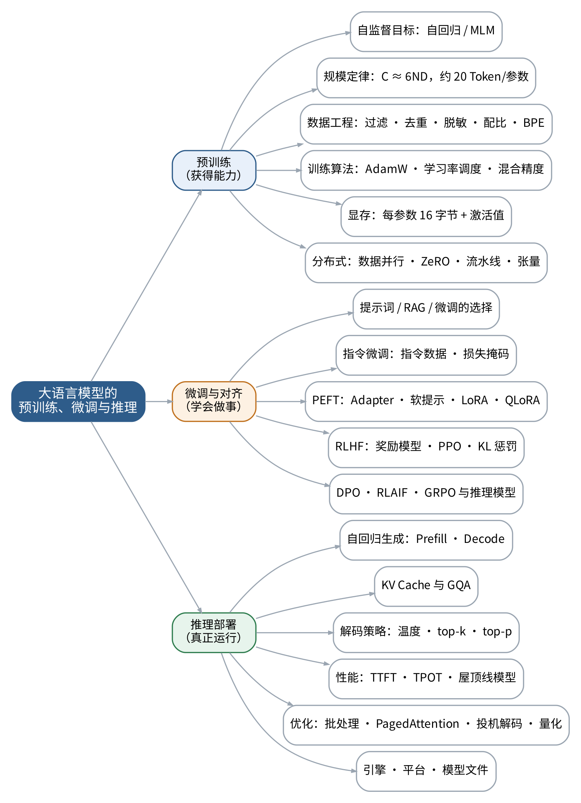

3.12 本章小结与习题
3.12.1 本章小结
本章沿着”预训练 → 微调与对齐 → 推理部署”的生命周期，讨论了大语言模型从随机参数成长为可用服务的全过程，知识框架如图 3-29 所示。

图3-29 本章知识框架
预训练让模型”有知识、会语言”。 模型通过”预测下一个 Token”这一自监督目标，从万亿级 Token 的无标注文本中学习语言规律和世界知识。规模定律揭示了损失随模型、数据和算力规模呈幂律下降的规律，Chinchilla 定律指出参数与数据应同步扩大。数据工程（过滤、去重、脱敏、质量打分、配比和分词）决定了模型能力的上限。由于训练计算量约为 \(6ND\)、模型状态约为每参数 16 字节，大模型训练必须依靠数据并行、ZeRO、流水线并行和张量并行等分布式技术。
微调与对齐让模型”听得懂指令、回答得好”。 指令微调用”指令—回答”数据教会模型遵循指令，且只在回答部分计算损失。参数高效微调冻结绝大部分参数，其中 LoRA 以低秩矩阵表示权重增量，QLoRA 进一步把基础模型量化到 4 位，使单卡微调大模型成为可能。RLHF 通过”人类排序 → 奖励模型 → PPO”使模型与人类偏好对齐；DPO 将其简化为一步监督学习；RLAIF 用 AI 反馈降低标注成本；基于可验证奖励的强化学习（如 GRPO）则推动了推理模型的发展。
推理部署让模型”真正跑起来”。 推理是自回归的：预填充并行处理输入、建立 KV Cache，主要受算力限制；解码逐 Token 生成，主要受内存带宽限制。KV Cache 以显存换取计算量，其大小随上下文长度和并发数增长，GQA 可以显著减小它。批处理、PagedAttention、FlashAttention、量化、投机解码等技术分别从不同角度提升推理效率。推理引擎负责”模型怎么算”，推理平台负责”模型怎么用”，选择部署方案时需要综合考虑模型规模、并发与时延、数据安全和成本。
表 3-22 汇总了本章的主要估算公式。
表3-22 本章主要估算公式
| 估算对象 | 公式 | 出处 |
|---|---|---|
| 训练计算量 | \(C \approx 6ND\) | 式（3-16） |
| 训练时间 | \(C\,/\,\left( n_{GPU} \times F_{peak} \times MFU \right)\) | 式（3-17） |
| 训练显存（混合精度 + AdamW） | 模型状态约 \(16\Psi\) 字节，另加激活值 | 表 3-6、式（3-19） |
| ZeRO-3 每卡模型状态 | \(16\Psi/N_{d}\) 字节 | 表 3-7 |
| 流水线气泡率 | \((p - 1)/(m + p - 1)\) | 式（3-22） |
| LoRA 可训练参数 | \(r(d + k)\)（每个矩阵） | 3.6.6 节 |
| KV Cache 大小 | \(2 \times L \times n_{kv} \times d_{head} \times s \times b \times p\) | 式（3-40） |
| 单请求解码速度上限 | 有效内存带宽 ÷ 每步读取的数据量 | 式（3-41） |
| 推理显存 | 权重 + KV Cache + 10%～20% 开销 | 式（3-51） |
3.12.2 习题
一、简答题
- 预训练、指令微调、偏好对齐和推理部署分别解决什么问题？为什么说预训练是”一次投入、多次复用”的？
- 比较自回归语言模型和掩码语言模型的训练目标，说明为什么生成式大模型普遍采用前者。
- 什么是”数据污染”？它会对模型评估造成什么影响？如何检测和避免？
- 混合精度训练能否减少模型状态所占的显存？它主要带来哪些好处？
- 指令微调时，为什么通常只在回答部分计算损失？
- LoRA 为什么不会增加推理时延？与 Adapter 相比，这一特点有什么实际意义？
- 在 RLHF 中，为什么要在优化目标中加入 KL 散度惩罚？什么是奖励作弊？
- DPO 为什么不需要单独训练奖励模型？与基于 PPO 的 RLHF 相比，它有哪些优缺点？
- 为什么说”预填充看算力，解码看带宽”？请用屋顶线模型加以解释。
- 什么情况下应该优先选择提示词工程、检索增强生成或微调？各举一个例子。
二、计算题
- 一个 13B 模型使用混合精度和 AdamW 进行全量训练。（1）模型状态约占多少显存？（2）若使用 ZeRO-3 分摊到 8 张卡上，每张卡约需多少显存（不计激活值）？
- 用 2.6 万亿 Token 训练一个 13B 模型，使用 1024 张 A100（BF16 峰值 312 TFLOPS），MFU 为 45%。估算训练所需的天数。
- 流水线并行使用 8 个阶段、32 个微批次，气泡率是多少？若微批次数减少到 8，气泡率又是多少？
- 对一个 \(5120 \times 5120\) 的权重矩阵应用 \(r = 16\) 的 LoRA，可训练参数有多少？占原矩阵参数的百分之几？
- 某模型有 32 层、8 个 KV 头、每头维度 128，以 FP16 存储 KV Cache。若每个用户的上下文为 8192 个 Token，同时服务 16 个用户，KV Cache 共需多少显存？
- 一个以 FP16 存储的 7B 模型（约 14 GB），在内存带宽约 400 GB/s 的设备上运行。估算单请求解码速度的理论上限。若量化到 4 位（约 4 GB），上限变为多少？
- 将权重 \((0.5,\ - 0.25,\ 0.1,\ - 1.0)\) 用对称线性量化为 INT8（取值范围 \(- 127 \sim 127\)），求缩放因子、量化后的整数和反量化后的值。
三、思考题
- 有用性与无害性常常相互冲突。请举例说明，并谈谈你认为应该如何在二者之间取得平衡。
- 推理模型通过生成更长的思维链来提高准确率。从本章推理性能的角度看，这会带来哪些新的挑战？
- 如果你要为自己所在的专业构建一个问答助手，请参照 3.11 节，设计一套完整的方案，并估算所需的数据和算力。
3.12.3 部分习题参考答案
11．（1）\(16 \times 13 = 208\) GB；（2）\(208/8 = 26\) GB。
12．\(C \approx 6 \times 1.3 \times 10^{10} \times 2.6 \times 10^{12} \approx 2.03 \times 10^{23}\) FLOPs；有效总算力为 \(1024 \times 312 \times 10^{12} \times 0.45 \approx 1.44 \times 10^{17}\) FLOP/s；训练时间约 \(1.41 \times 10^{6}\) 秒，约 16.3 天。
13．\(7/39 \approx 17.9\%\)；\(7/15 \approx 46.7\%\)。
14．\(16 \times (5120 + 5120) = 163840\) 个，占 \(163840/(5120 \times 5120) \approx 0.625\%\)。
15．每个 Token 为 \(2 \times 32 \times 8 \times 128 \times 2 = 131072\) 字节（128 KB）；总计 \(131072 \times 8192 \times 16 \approx 1.72 \times 10^{10}\) 字节，约 17.2 GB。
16．FP16 时约 \(400/14 \approx 28.6\) tokens/s；4 位时约 \(400/4 = 100\) tokens/s（实际还需计入 KV Cache 的读取量，速度会略低）。
17．缩放因子 \(s = 1.0/127 \approx 0.007874\)；量化整数为 \((64,\ - 32,\ 13,\ - 127)\)；反量化值约为 \((0.5039,\ - 0.2520,\ 0.1024,\ - 1.0)\)。